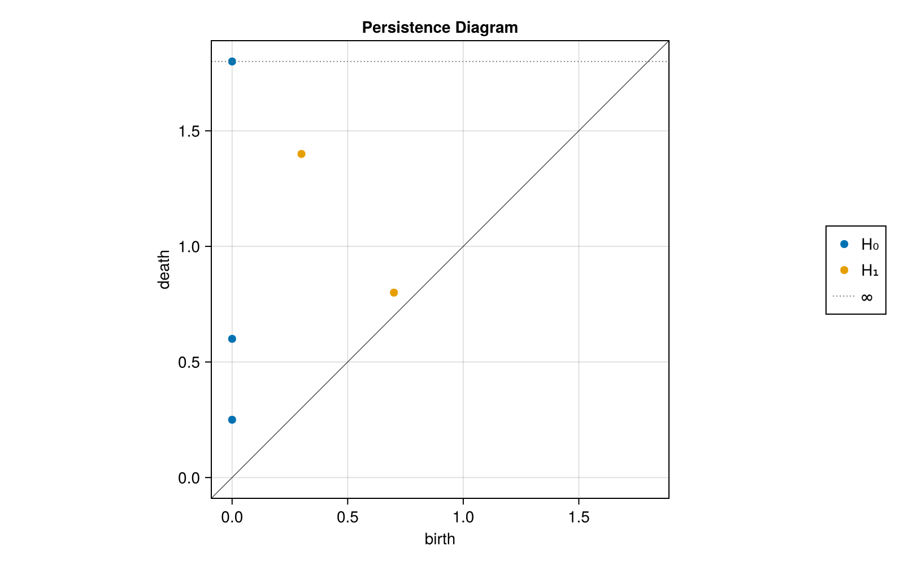
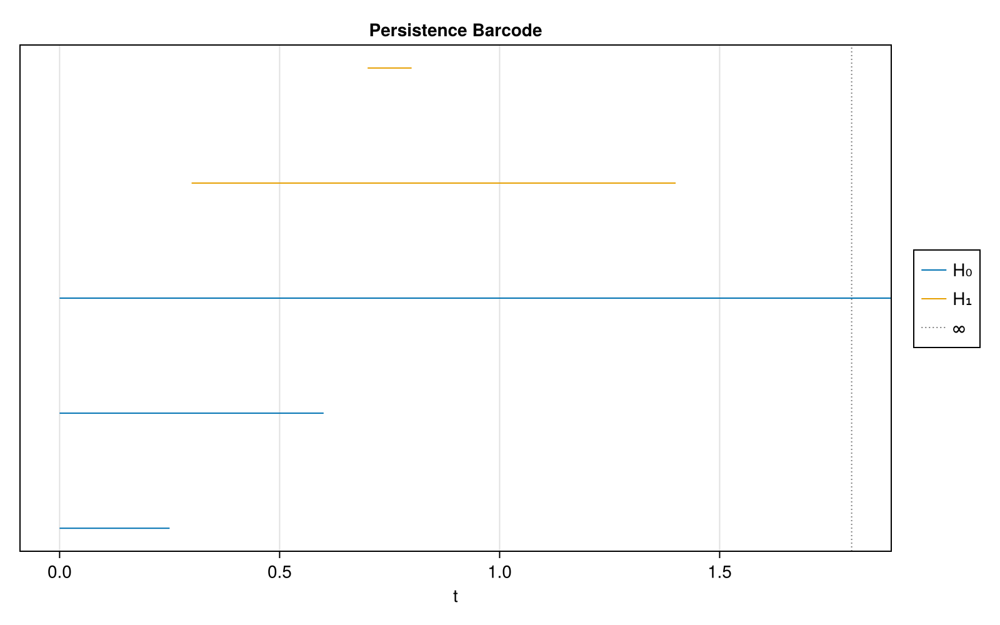
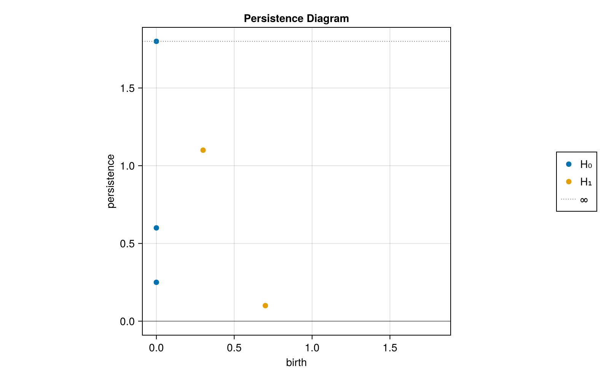
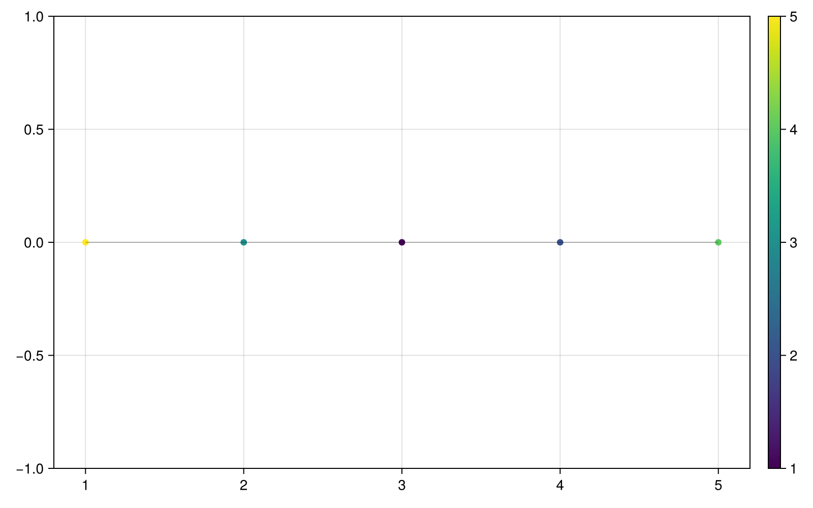
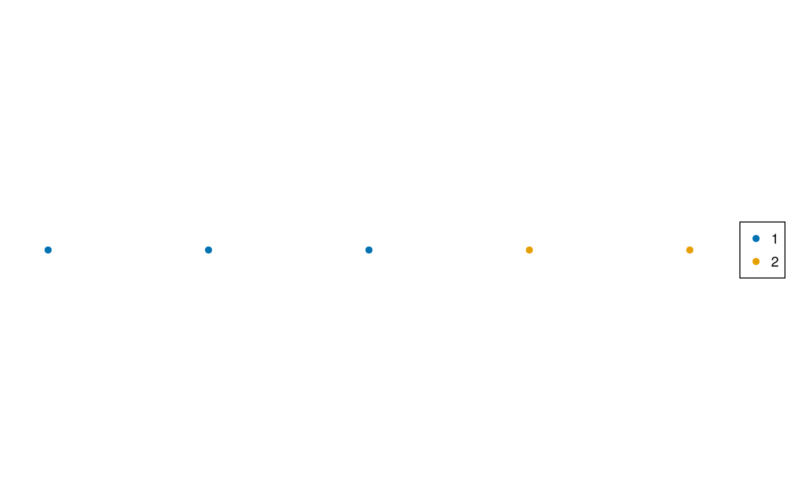
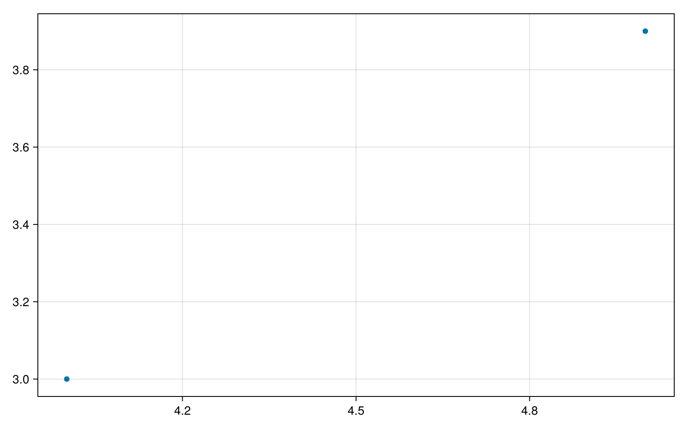
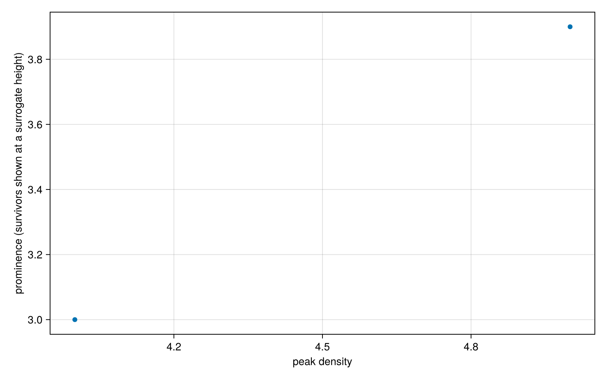

Persistence diagrams, barcodes and density modes
Persistent homology and ToMATo both summarize features across thresholds, but their thresholds run in different directions. Keep their data types and plotting conventions separate: homology intervals have a birth and later death in an increasing filtration; ToMATo peaks are born at high density and merge at lower density.
A homology diagram and its barcode
The example supplies intervals directly, so no homology computation is hidden inside plotting. Import constructors from TDAPersistenceDiagrams explicitly.
using CairoMakie, TDAplots
using TDAPersistenceDiagrams: PersistenceDiagram
set_theme!(size=(800, 500))
h0 = PersistenceDiagram([(0.0, 0.25), (0.0, 0.6), (0.0, Inf)]; dim=0)
h1 = PersistenceDiagram([(0.3, 1.4), (0.7, 0.8)]; dim=1)
diagrams = [h0, h1]
persistence_plot(diagrams; infinity=1.8)
Each point in the birth/death view is an interval. Its distance above the diagonal is related to death - birth; long intervals are farther above the diagonal. H₀ summarizes connected components and H₁ cycles. A long interval is evidence of persistence across filtration scales, not by itself proof that a feature is scientifically meaningful.
barcode_plot(diagrams; infinity=1.8)
The barcode draws one horizontal segment per interval. Its row order follows the supplied diagram and interval order; row height has no mathematical meaning. Colours distinguish diagram groups. The legend uses dimension metadata when available.
persistence_plot(diagrams; persistence=true, infinity=1.8)
This view uses (birth, death - birth) for finite intervals, putting prominence in the vertical direction. Both plotters accept one PersistenceDiagram or a vector of diagrams. A TDARipserer output of matching types can be passed directly; plotting does not recompute persistence.
Infinite intervals are display conventions
An interval with infinite death has no finite right endpoint. The functions choose a display value from finite diagram threshold metadata when available, otherwise from the finite data range. Set infinity explicitly for consistent comparisons, especially for diagrams with only infinite intervals or births near zero.
The diagram draws infinite intervals at the chosen value and adds a dashed infinity line. In the persistence view, that value is a display height rather than infinity - birth. The barcode extends infinite bars to the upper plotting boundary, slightly beyond its marked infinity line. These endpoints are display surrogates, not measured deaths. Choose a display value beyond finite deaths/births so the convention stays clear.
ToMATo: a valley connects density peaks
We reuse the five-point example from ToMATo's guide. Peaks of heights 5 and 4 meet at a saddle of height 1; the shorter peak has prominence 3.
using CairoMakie, TDAplots, ToMATo
using Graphs: path_graph
X = EuclideanSpace([[Float64(i), 0.0] for i in 1:5])
g = path_graph(5)
densities = [5.0, 3.0, 1.0, 2.0, 4.0]
labels, _ = tomato(X, g, densities, 2.0)
_, mode_diagram = tomato(X, g, densities, Inf)
@assert labels == [1, 1, 1, 2, 2]
tomato_graph_plot(X, g, densities)
tomato_graph_plot draws graph edges in the original two/three-dimensional point coordinates and colours observations by numeric values. For higher ambient dimension it uses the first three coordinates; it does not compute an embedding. Here colours describe density rather than cluster identity.
For labels, use categorical colouring instead:
metricspace_plot(X; color=string.(labels))
The graph helper accepts numeric labels too, but its continuous colorbar does not express categories. Its current colorbar is a simple range display and may not reflect a customized theme or Makie scatter colormap; use metricspace_plot when exact numeric colour semantics or a categorical legend matter.
Read the mode prominence view
tomato_persistence_plot(mode_diagram; max_value_multiplier=1.3)
tomato_persistence_plot uses the ToMATo dictionary peak_point_id => [birth_density, death_density]. Finite entries are shown at (birth_density, birth_density - death_density). The shorter mode has finite prominence 3; the taller survivor has death Inf.
The helper replaces the resulting -Inf ordinate of an unmerged mode with max_value_multiplier times the largest finite prominence. If there are no finite prominences, it uses the largest birth height instead. The current helper does not label or specially mark these substituted points. Interpret them using the dictionary; the displayed height is not a measured lifetime. Empty dictionaries are not currently supported.
ToMATo records deaths only for merges actually accepted in that run. An Inf run removes the finite prominence cutoff and is useful for examining recorded finite prominences. It does not retain every mode as a separate cluster. Select τ after inspecting the finite prominences; increasing τ permits more merging. Consult the ToMATo guide for density ties, the current multiway saddle limitation, disconnected components and background label 0. Even a connected graph can retain multiple modes at Inf in those edge cases.
The ToMATo helper returns a Makie FigureAxisPlot, so you can label the axes when preparing an export:
plot = tomato_persistence_plot(mode_diagram)
plot.axis.xlabel = "peak density"
plot.axis.ylabel = "prominence (survivors shown at a surrogate height)"
plot